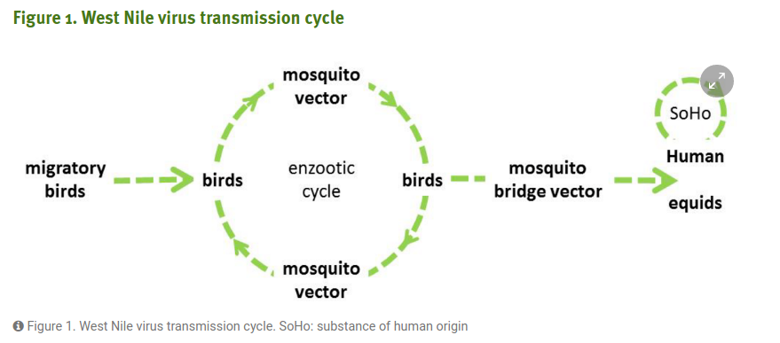
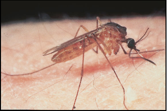
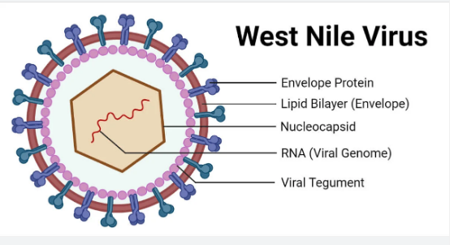

A Retroactive Analysis on Arbovirus Clusters throughout New England
Mosquitoes of Interest
Mosquitoes can transmit a variety of viruses to humans and animals. Some of the most common mosquitos can include:
-

- Culix pipiens: Common house mosquito
- Aedes japonicus: Asan Bush Mosquito
- Aedes canadensis: Woodland Pool Mosquito
- Culex salinarius: Salt Marsh Culex 

- Most common mosquito in the northern region.
- Consumes human blood but prefers bird bloox.
- Thrives in wet and temperate climates.
- Well known carrier of many diseases.

- An invasive species to the United States
- Can transmit Japanese encephalitis virus (JEV)
- Native to Korea, Japan, Taiwan, Southern China and RUsh
It has been implicated as an important anthropod-borne virus vector

- An aggressive, day biting mosquito that can be a vector of a number of diseases
- Which is found mainly in
eastern North America.
- Females gain blood meals from a wide range of large and small animals, birds, and reptiles.
- Can be found all over the U.S from Main to southern Florida, to Texas
- It feeds on birds as well as mammals, so it has been incriminated
as a potential bridge vector for encephalitis virus
West Nile Virus
-

- West Nile Virus a is a mosquito-transmitted zoonotic virus that is endemic to North and South America and Europe.
- Spherical in shape it contains a lipid bilayer that is derived from its host cell (may be bird, human, etc)
and contains a single RNA genome encoding for the virus. - The CDC has been helping states with detecting WNV since 1990, but in 2002 WNV became a notifiable disease as
there were many cases that year that were classified as neuroinvasive - States now conduct testing and detecting each season (June through October) and report to the CDC using the Arbonet program.
West Nile Virus and Climate Change
- West Nile Virus is considered a key indicator for Climate Change
- Studies show that warmer climates have a direct correlation for higher populations of mosquito reservoirs and rates of bating
- Which increases the likelihood of the spread of infectious disease
- Many states have been tracking the rates of mosquito pools throughout the state since before 2002